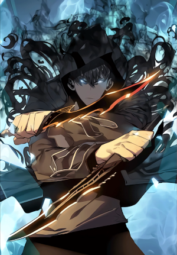
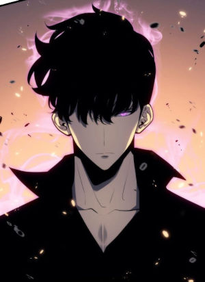

Introdução
Solo Leveling (hangul: 나 혼자만 레벨 업 e romanização: Na Honjaman Lebel-eob) é a mais nova obra que está conquistando muitos fãs de manhwas, ação e histórias em quadrinhos que envolvem lutas épicas e RPG. A trama é escrita e ilustrada por Jang Sung-Lak. Solo Leveling, em uma tradução literal para o português, significa "Upar sozinho", ou seja, uma referência à contínua capacidade do protagonista de conseguir evoluir de nível ─ nesse caso, rank E para S ─, sendo um "over power", cheio de protagonismo e clichês, mas trazendo pontos positivos à obra. Resumidamente, nós acompanhamos a caminhada de Sung Jin-Woo, o caçador mais fraco do mundo, porém, com a "ajuda" no final da Double Lair, ele ganha um poder único de ser um jogador e obedecer suas quests que aparecem em uma espécie de janela, na qual somente o intérprete vê. A partir disso, uma nova mudança passa por sua vida. Agora, pensemos: será que Jin continuará tendo sua humanidade ou algo a mais poderá lhe ocorrer?
"O túnel que conectα outrα dımensα̃o com o nosso mundo: 'o portαl.' E α cαsα dos monstros, αs 'dungeons.' Aqueles que cαçαm os monstros sα̃o chαmαdos de 'Cαçαdores', mαs eu sou um cαçαdor que sofre αté mesmo nαs dungeons mαıs bάsıcαs; um cαçαdor de rαnk E. 'O cαçαdor mαıs frαco do mundo.' Porém, α dungeon mαıs dıfı́cıl estαvα escondıdα dentro de umα dungeon de rαnk D, α Double Lαır. No fım, eu nα̃o puder fugır dα morte... mαs, quαndo eu estαvα prestes α morrer, eu αcordeı no hospıtαl e... depoıs, dαquele dıα, eu gαnheı umα novα hαbılıdαde: umα jαnelα de mıssões que só eu posso ver. Se eu treınαsse de αcordo com mınhαs quests, meu nı́vel ırıα subır. Assım, me trαnsformαr do cαçαdor mαıs frαco pαrα o cαçαdor mαıs forte do rαnk S!"
Enredo
Há 10 anos, o mundo o qual conhecemos criado pelos humanos teve uma grande reviravolta com o surgimento de um portal que conectava a um mundo recheado de monstros. Não somente isso que foi uma enorme mudança, mas pessoas com poderes também acabaram por aparecer na Terra. Esses humanos diversificados tinham habilidades de diferentes níveis, isto é, do mais fraco (E) para o mais poderoso de todos (S), assim, passando a se chamarem de "caçadores".
Os tais portais supraditos, os quais também têm leveis (S, A, B, C, D e E), inclusive, levavam-nos a raids com criaturas horrendas, tais quais foram nomeadas de dungeons. Sung Jin-Woo, o personagem central da narrativa, é um rapaz de rank E e conhecido por vários caçadores por ser "o mais fraco do mundo", assim, infelizmente, ganhando esse título vergonhoso. Ele, todavia, passou a não ligar para isso, pois o que mais precisava era do dinheiro que ofereciam por conquistar as dungeons, embora fosse pouco, tentava o máximo de si, porém sempre acabava ferido. Por causa do seu nível, ele só participava de portais de rank E a D, entretanto, era sempre protegido, curado no fim ou como um fardo aos demais. Em uma raid de level baixo-médio, ele e seu grupo encontraram uma masmorra secreta (a Double Lair) e, ademais, depararam-se com inimigos gigantes e poderosos. O boss dali era quase impossível de distinguir o seu level e suas regras, mas, no último instante da vida de Sung, no qual estava para sucumbir à morte, o rapaz recebeu de presente um estranho poder que o fazia subir de nível conforme treinava, além de ter que realizar todas as tarefas propostas pelas suas quests que só o tal via. A partir daí, Jin-Woo mudou, não só de aparência e personalidade, como também de rank. Após incontáveis treinos em portais secretos que só ele conseguia abrir com uma chave e exercícios diários, o jovem ficou mais forte, porém, muitas coisas aconteceram consigo. O intérprete, todavia, presenciou três incidentes em dungeons, o que acabou atraindo atenção de algumas pessoas em querer mais informações dele, inclusive um caçador de rank S que buscava vingar seu irmão, até o momento em que entrou numa raid, o Portal Vermelho, o que resultou em revelar partes de seu poder e alguns indivíduos o quererem para suas guildas. Com isso, incontáveis coisas, acidentes, inimigos, lutas épicas, pessoas desconfiando ou curiosas vêm a aparecer no caminho de Sung; encontros e mortes também surgem. Como será a jornada em se tornar o mais forte do mundo de rank S? Recomendo ler essa magnífica obra!
O protagonista
Jin, como supracitado, é o protagonista da obra, sendo ele conhecido como o caçador mais fraco do mundo, além de ser de rank E, o level mais baixo para alguém. O rapaz é um estudante universitário que sustenta a sua mãe e irmã sozinho com tal trabalho, por isso, mesmo não sendo de grande ajuda em uma dungeon, ele tenta dar o máximo de si pela sua família. Em uma Double Lair, isto é, uma raid dupla que devia ser de rank D, Sung se depara com um boss altamente poderoso, talvez de nível S ou superior, fazendo-o temer que iria morrer ali. No entanto, ao acordar, o intérprete percebe que ganhou uma habilidade única que o faz "upar" de level sozinho, até que possa, um dia, tornar-se o caçador mais forte do mundo.
Sung Jin-Woo, a princípio, possuía uma aparência simples e delicada, ou seja, ele detinha uma estatura mediana, cabelos pretos, curtos, porém cheios, e um físico meio fraco, já que não coincidia para um caçador. Após o seu "despertar", Jin começa a treinar diariamente, assim, aumentando sua massa muscular e, inevitavelmente, sua estatura progride, tornando-lhe um jovem mais alto, esbelto e sedutor, principalmente que atrai as mulheres que o veem. Dessa forma, Sung passa a conter músculos definidos, abdômen sarado e braços fortes. Também muda de corte um pouco, deixando seus cabelos mais repicados em cima, os quais, às vezes, caem sobre a testa e cobrem os olhos, e nas laterais e na nuca mais rentes (curtos). Aparentemente, nos momentos em que está no ápice de suas batalhas frenéticas, os seus olhos ofuscam um brilho azulado, demonstrando a êxtase ou o foco que sente em sua luta, mas eles são escuros, mais ou menos acinzentados. Em relação às suas vestimentas, ele gosta de ser mais despojado e estar confortável, assim, prefere utilizar calças de moletom ou jeans, camisas T-shirts, tênis e, a peça que aparenta amar, casacos de capus ou jaquetas. O jovem tinha uma personalidade mais delicada, pois Jin-Woo sempre se preocupava na sobrevivência dele e dos seus companheiros nas missões, assim, desejando que todos saíssem vivos. Além disso, era alegre, sorridente, mesmo sendo esculachado pelos outros por causa do seu rank, mas fingia que não ouvia, já que o que mais lhe importava era ganhar dinheiro para sua família. Posteriormente, Sung modifica essa sua índole, passando a ser mais solitário e não se importando com as pessoas, sendo bastante estratégico e astuto perante às adversidades. Todavia, lá no fundo, ele ainda tem resquícios de sua bondade, pois, por mais que haja aqueles que deixa para morrer, há gente que vê que merece proteger ou ajudar. Por fim, acrescento que Jin é alguém independente, responsável, possui a ambição de se tornar o mais forte e corre atrás do que deseja, mesmo que tenha que suar, ou sujar suas mãos com pessoas maléficas, ou usar outras para benefício próprio.